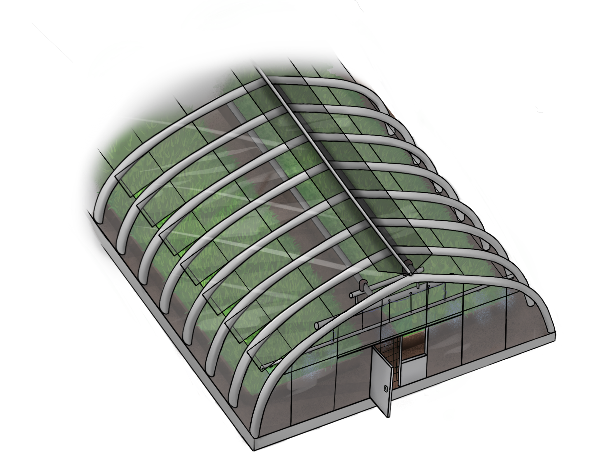

Теплицы
Наши Теплицы
Внедрение передовых технологий для повышения эффективности и экологичности.
Инновации

Внедрение передовых технологий для повышения эффективности и экологичности.
Экологичность
Эко-дружественные решения для создания устойчивого будущего.
Технологии

Использование новейших технологий для улучшения производительности.
Производительность

Повышение производительности с использованием передовых методов.
Устойчивость

Устойчивые решения для минимизации воздействия на окружающую среду.
Качество
Высококачественные продукты для удовлетворения всех потребностей.